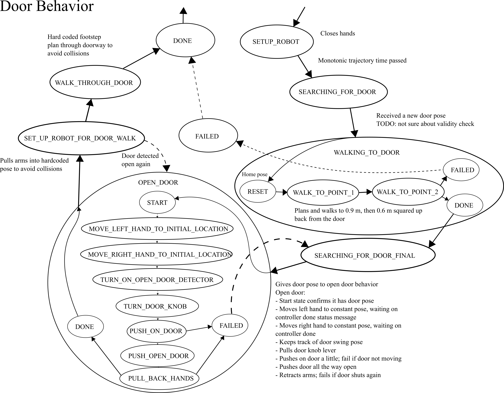
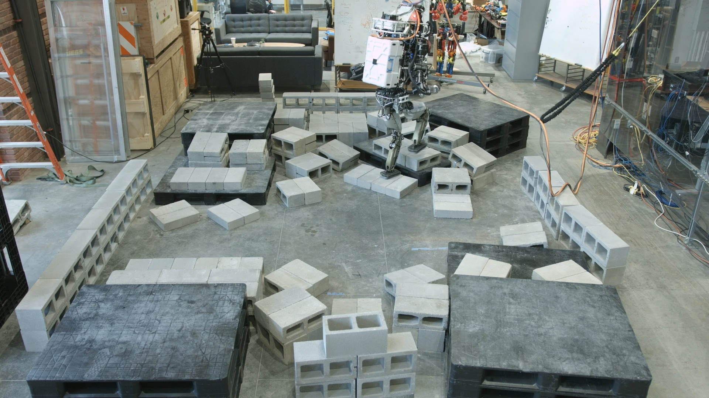
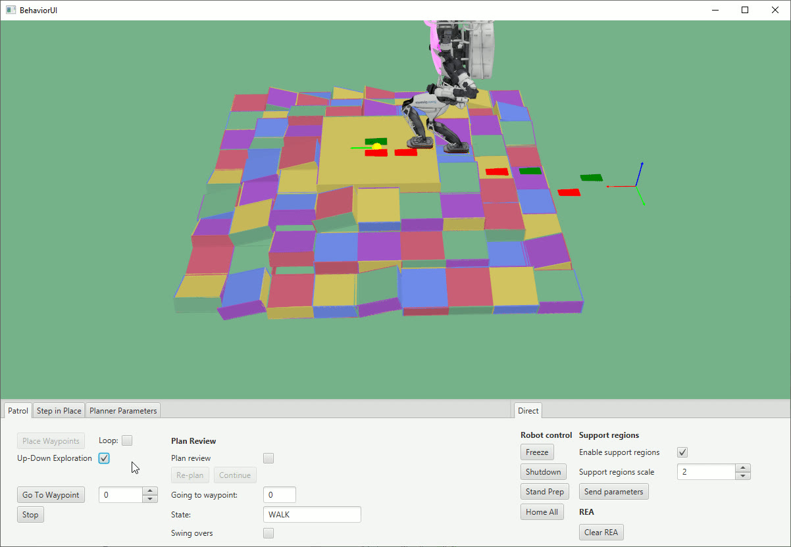
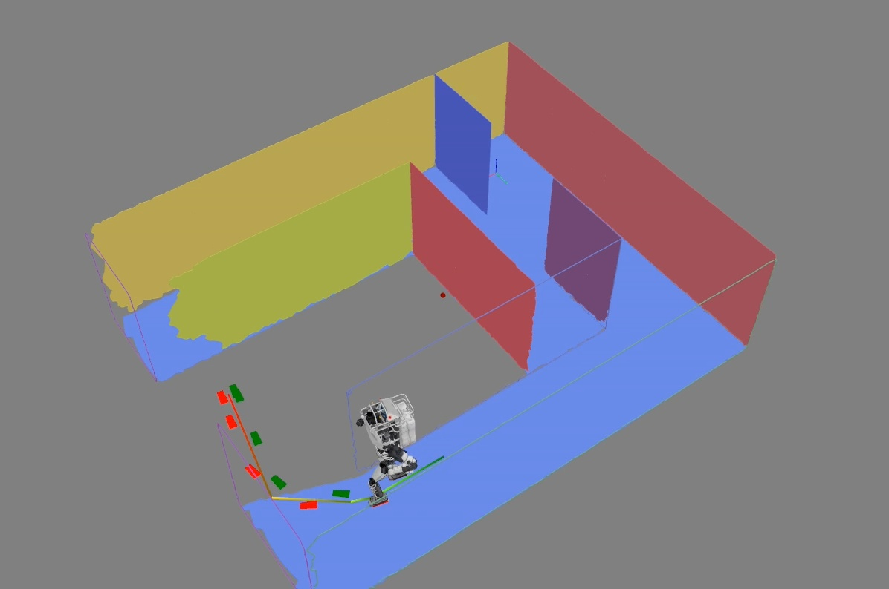
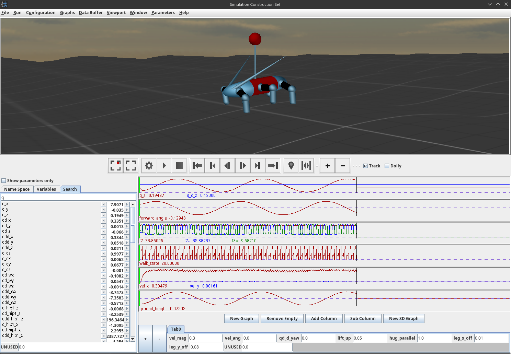

4.2. 2016-2019 Atlas, Hard-Coded, JavaFX Era
4.2.1. State Machines and Pipelines
The next generation of behaviors at IHMC started around 2016, where we implemented code-defined behaviors as state machines and pipelines. These behaviors used the whole-body controller API directly, which was developed for the NASA Space Robotics Challenge [29] and is largely the same today. It allows asynchronous commands for the various body parts to be submitted in real time. The controller maintains a list of active commands that it is actively controlling the robot to satisfy. For example, you can send a list of footsteps for the robot to take, a 3D hand pose for the robot to reach to, or a list of joint angles for the spine, a leg, an arm, or the neck. Pipelines allowed a level of hard-coded action concurrency by branching out into parallel states before rejoining.
This generation of behaviors started to use perception in the form of basic OpenCV color filters, blob detectors, fiducial detectors, and simple lidar processing. This enabled us to perform behaviors such as pull-door traversals (Figure 4.5) and autonomous ball pickup behaviors. These behaviors were slow in the several minutes range for door traversals and maybe 5 to 10 minutes for picking up colored balls off the floor. They were performed with the Boston Dynamics DRC Atlas. Some of the slowness was due to reaching the relatively slow maximum speeds of this hardware platform.

4.2.2. System Limits
Perception was a big limitation in these behaviors. We relied on a MultiSense SL [38] sensor package which featured a spinning Hokuyo lidar scanner [39] which took some time to gather sufficient data. We also didn’t have good software for buffering and querying the point cloud quickly. This made it difficult to achieve fast behavior based on perception.
Another key limitation was the architecture. The behaviors were coded by hand, with magic numbers in the code defining the poses of the hands and footsteps relative to objects. This meant that iterating on behaviors required code changes for every tweak. In practice, this was done by running the behavior off-board on the operator computer and using a code-reloading tool called JRebel [86], [87]. The iteration loop required magic number tweaking, code commenting, reordering, and restructuring. This authoring process was an unguided expert code tweaking exercise.
4.2.3. Autonomous Locomotion with JavaFX UIs

In 2017 and 2018, we started to develop more planning and perception capability, but using a separate UI framework from the DRC UI. We developed an A* footstep planner [31] and a planar region segmentation perception algorithm [32] that worked together. Using the MultiSense SL lidar scanner, we could wait for 20 seconds or so, pool an OctoMap [40] terrain representation, segment it into planar regions, and plan footsteps over it. This facilitated a leap in robot autonomy. The robot was now able to traverse sections of rough terrain autonomously, as shown in Figure 4.6 and Figure 4.7.

These planning and perception features departed from the DRC UI, opting to use JavaFX for the algorithm visualization. This meant that there was now a separate UI framework for algorithm development and robot operation. A complication was that JavaFX could not render point clouds efficiently like the DRC UI could, causing somewhat of a rift when deciding how to visualize robot data.
4.2.4. Navigation with Planar Regions
Around 2019, we started to develop room-to-room navigation tools in the JavaFX ecosystem (Figure 4.8), while also starting the development of a rough terrain traversal behavior system that used active perception for each footstep. It was in 2019 that the work on this thesis started directly. One aspiration was to try to unify the tools used for robot operation and planning and perception algorithm development. The reason this was important was to simplify the decision of what tools to use when developing a feature and also reduce code duplication. For example, the JavaFX UI could not render point clouds efficiently and it was cumbersome to create UI widgets. Conversely, the DRC UI code was aging and it was time to evaluate a more modern set of building blocks while cleaning up the code.

Another issue with the DRC UI was the friction in creating standalone applications. When developing planners and perception algorithms, it is desirable to create a test or demo app just for that, while maintaining the usability of those components in larger apps, such as algorithm visualization elements.
4.2.5. Virtual Reality Teleoperation
Around this time, we had also developed some virtual reality (VR) applications based on the DRC UI, which allowed for teleoperating the robot. This virtual reality interface made authoring one-time-use footstep plans really fast. We ran a demonstration where the VR operator was able to manually place footsteps over a rough terrain cinder block field in the range of a few minutes. One caveat to this implementation was that the operator had to either launch the 2D DRC UI or the VR one and could not switch between VR and mouse and keyboard modalities without restarting the user interface. Restarting the user interface is a frustrating operator action because you can lose any persistent state you may have in setting up robot commands. Additionally, it can take several minutes to relaunch the user interface. This can really start to eat up time.
4.2.6. Simulation Construction Set
We also had a simulation and data visualization engine called Simulation Construction Set (SCS), which allows users to programmatically create rigid-body dynamics simulations and robot controllers. On top of that, it featured a 3D view of the robot and scrubbable plots of buffered variable data, as seen in Figure 4.9. SCS was implemented using an older version of jMonkeyEngine and features were not interchangeable with our DRC UI. For UI widgets, SCS used Java Swing, but using a very different code path than the Java Swing used in the DRC UI. The takeaway here is that while SCS and the DRC UI used the same underlying libraries, functionality could not be shared between them.

References cited on this page
[29] K. A. Hambuchen et al., “NASA’s space robotics challenge: Advancing robotics for future exploration missions,” in AIAA SPACE and astronautics forum and exposition, 2017. doi: 10.2514/6.2017-5120.
[31] R. Griffin, G. Wiedebach, S. McCrory, S. Bertrand, I. Lee, and J. Pratt, “Footstep planning for autonomous walking over rough terrain,” arXiv, 2019. Available: https://arxiv.org/abs/1907.08673
[32] S. Bertrand, I. Lee, B. Mishra, D. Calvert, J. Pratt, and R. Griffin, “Detecting usable planar regions for legged robot locomotion,” in 2020 IEEE/RSJ international conference on intelligent robots and systems (IROS), 2020, pp. 4736–4742.
[38] Carnegie Robotics, “MultiSense SL sensor.” https://www.carnegierobotics.com/multisense-stereo-cameras, 2024.
[39] Hokuyo Automatic Co., “UTM-30LX-EW scanning laser rangefinder.” https://www.hokuyo-aut.jp/search/single.php?serial=169, 2024.
[40] A. Hornung, K. M. Wurm, M. Bennewitz, C. Stachniss, and W. Burgard, “OctoMap: An efficient probabilistic 3D mapping framework based on octrees,” Autonomous Robots, vol. 34, no. 3, pp. 189–206, 2013, doi: 10.1007/s10514-012-9321-0.
[86] J. Kabanov and V. Vene, “A thousand years of productivity: The JRebel story,” Software: Practice and Experience, vol. 44, no. 1, pp. 105–127, 2014, doi: 10.1002/spe.2158.
[87] Perforce Software, “JRebel.” https://www.jrebel.com/, 2026.